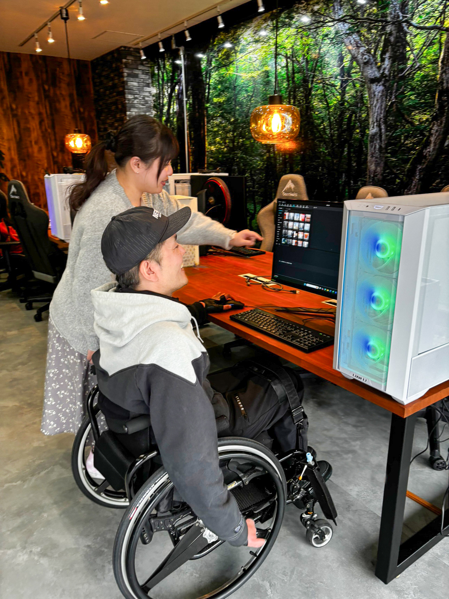
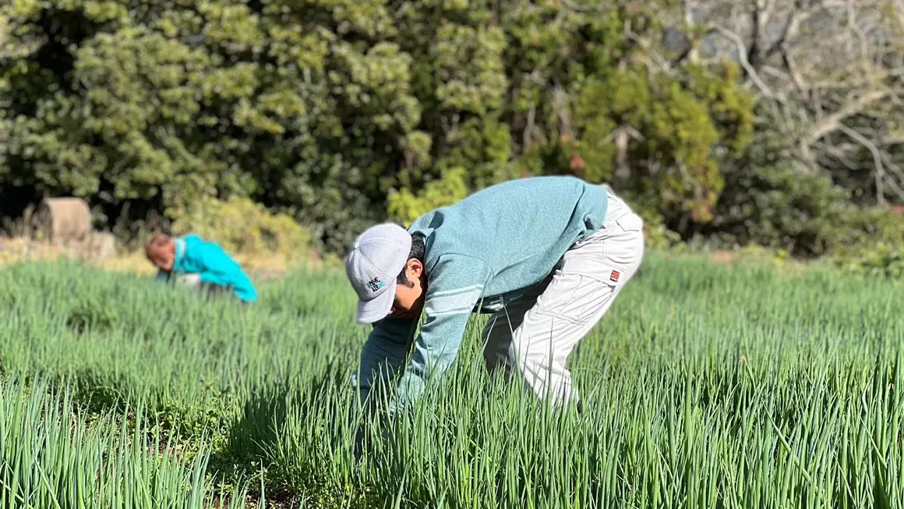
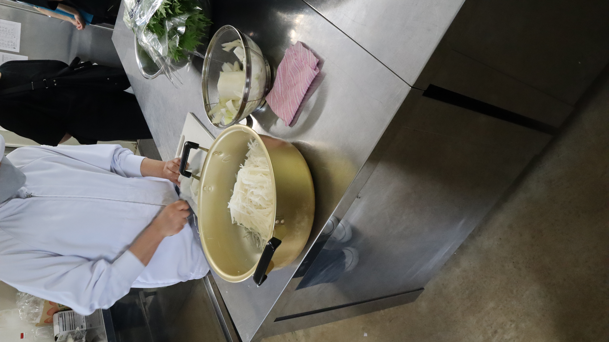
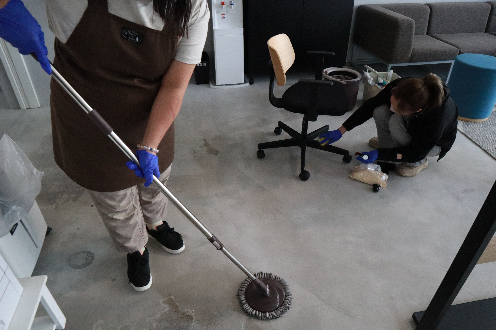

CREATIVE — 01
クリエイティブ部門

写真：PC作業・制作の様子動画編集やWeb制作、デザイン、3DCG制作など、パソコンを使った制作業務を中心に行う部門です。SNS運用やPCスキル訓練から始め、少しずつ実務レベルのスキルへとステップアップしていきます。
主な仕事内容
- 動画編集
- Web制作
- デザイン制作
- 3DCG制作
- SNS関連業務
- PCスキル訓練
資格取得支援制度
日商PC検定2級以上に合格した場合、試験費用をエンポートが負担する制度があります。学んだスキルを形に残せる仕組みです。
フレックス制度
クリエイティブ部門のみ、9:00〜18:00の間で実働4時間（12:00〜13:00休憩を除く）のフレックス勤務が可能です。通院や急な予定による中抜けにも対応できます。
実施拠点
エンポート佐世保（クリエイティブ部門）｜就労継続支援B型
〒857-0044 長崎県佐世保市相生町2-35
0956-37-6780
エンポート伊万里（クリエイティブ・キッチン部門）｜就労継続支援B型
〒848-0041 佐賀県伊万里市新天町497-1
0955-29-8956
AGRICULTURE — 02
農業部門
土に触れ、季節の移り変わりを感じながら、農作物を育てる部門です。自然や地域とのつながりを感じながら、収穫という目に見える成果を積み重ねていきます。
主な仕事内容
- 農作物の栽培
- 畑の管理作業
- 収穫作業
- その他、農業に関する作業
こんな方に
体を動かすことが好きな方、屋外での作業に達成感を感じる方、地域とのつながりを大切にしたい方に向いています。
実施拠点
エンポート佐世保（農業部門）｜就労継続支援B型
〒857-0143 長崎県佐世保市吉岡町1639-1
0956-37-6780

写真：農作業・収穫の様子KITCHEN — 03
キッチン部門

写真：調理・盛り付けの様子調理・配達・ケータリングを通じて、「食」で誰かに喜んでもらう仕事です。A型・B型それぞれの働き方に合わせて、作業の内容や負担を調整しています。
A型事業所｜キナリ佐々
調理・配達・他事業所へのケータリングを行います。事前に仕込んだ料理を他事業所へ届け、温め直し、盛り付けまで担当します。
〒857-0353 長崎県北松浦郡佐々町沖田免84
0956-59-5367
B型事業所｜エンポート伊万里（クリエイティブ・キッチン部門）
調理補助・調理作業のほか、隣接する建物へのケータリング作業を行います。A型に比べ、無理のないペースで取り組める作業内容です。
〒848-0041 佐賀県伊万里市新天町497-1
0955-29-8956
CLEANING — 04
清掃部門
関係機関などへ出向き、清掃作業を行う部門です。移動には職員が車で送迎同行し、現地でも一緒に作業を行うため、初めての作業でも安心して取り組めます。
主な仕事内容
- 関係機関などの清掃作業
安心のポイント
移動から作業まで、必ず職員が同行します。一人で任されることはなく、困ったときにすぐ相談できる環境です。
実施拠点
エンポート波佐見｜就労継続支援B型
〒859-3715 長崎県東彼杵郡波佐見町宿郷484番地2の2 三岳テナントA号
0956-37-8166
エンポート佐々｜就労継続支援B型
〒857-0311 長崎県北松浦郡佐々町本田原免107 ファースト坂本ビル1F-D
0956-59-6560

写真：清掃作業・送迎の様子どの部門が合うか迷ったら、見学で相談してください。
複数の部門を見学することもできます。お気軽にお問い合わせください。